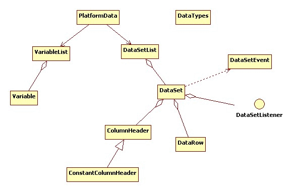

| Interface | Description |
|---|---|
| DataSetDataConverter |
Transform
DataSet data to other type data. |
| DataSetListener |
EventListener managing data or structure modification of DataSet. |
| VariableDataConverter |
transform
Variable data to other type data. |
| Class | Description |
|---|---|
| ColumnHeader |
Saves properties for
DataSet column. |
| ConstantColumnHeader |
ColumnHeader with DataSet constant value(value). |
| DataSet |
Consist of column and row, and saves 2 dimensional data.
|
| DataSetEvent |
EventObject indicating DataSet structure or data modification. |
| DataSetList |
saves
DataSet with 2 dimensional data. |
| DataTypes |
decide data type supported in X-API.
|
| Debugger |
provide useful function when development.
|
| DefaultDataSetDataConverter |
DataSetDataConverter basic realization transforming DataSet data to other type data. |
| DefaultVariableDataConverter |
VariableDataConverter basic realization transforming Variable data to other type data. |
| PlatformData |
it is the tup data of X-API, and a basic unit of data communication or data movement. i.e. when transmitting/receiving server and data, or delivering data between classes, conduct by using
PlatformData. |
| Variable |
indicate variable saving data, and consist of Identifier(name) and value.
|
| VariableList |
save
Variable with singular data. |
Define X-API Data Structure.
For data transmitted/received between the client and the server,
there are singular data, and two dimensional data similar to the Table of DB.
In order to transmit/receive or control such data, data structure should be defined.
Primary classes are;
PlatformData,
DataSet
Variable.
Variable Singular DataDataSet ReferenceDataSet CreationColumnHeader Property ReferenceDataSet Column Addition Using ColumnHeaderColumnHeaderConstantColumnHeaderDataSet Original Data and Modified DataDataSet EventDataSet OptionsBelow is a simple example of X-API data reference.
PlatformData department = ...;
|
Below is a simple example of creating X-API data.
// PlatformData Creation
|
Data can be divided largely into singular data and two dimensional data.
Singular data contain name, an identifier classifying data, and value,
which are saved into VariableList. DataSet saving two dimensional data consist of column and row,
and is saved or referred through DataSetList.
PlatformData, containing VariableList and DataSerList, is located on the top of data structure,
and is used as basic unit of data movement and data transmit/receive.

Data type provided in X-API is defined in DataTypes.
Data types differ between nexacro platform and X-API, and X-API has more specification. However, basically, data loss while nexacro platform and X-API communication does not occur.
nexacro platform Runtime nexacro platform Javascript X-API Java Detail STRING String DataTypes.STRING String Character string INT Int DataTypes.INT int 4 byte integer INT Int DataTypes.BOOLEAN boolean True or false (1 or 0) BIGDECIMAL BigDecimal DataTypes.LONG long 8 byte integer FLOAT BigDecimal DataTypes.FLOAT float 4 byte real number FLOAT BigDecimal DataTypes.DOUBLE double 8 byte real number BIGDECIMAL BigDecimal DataTypes.BIG_DECIMAL java.math.BigDecimal - DATE Date DataTypes.DATE java.util.Date Date (yyyyMMdd) TIME Date DataTypes.TIME java.util.Date Time (HHmmssSSS) DATETIME Date DataTypes.DATE_TIME java.util.Date Date and Time (yyyyMMddHHmmssSSS) BLOB Unsupported DataTypes.BLOB byte[] byte array
Variable Singular DataVariable indicate the variable saving data, and consist of name and value. Value is saved after conversion according to data type.
Variable creation and data setting is available in 3 methods.
Variable(name, type, value) creator summonVariable(name) or Variable(name, type) creator summon and set(value) mothod summonVariable.createVariable(name, value) static method summonAdding Variable to VariableList; add through add(var) method after Variable creation.
Also, it can be added by direct value through add(name, value) method without Variable creation.
// PlatformData Creation
|
Variable) Addition
Data saved to Variable can refer to value using method according to necessary data type as getObject() and getString().
The caveat is, if requested for data type restoration to different data type from the original, data modification could occur.
Variable saved in VariableList refer through get(name) method,
and can directly refer to the value using methods as getObject(name) and getString(name) .
PlatformData department = ...;
|
Variable) Reference
DataSet ReferenceDataSet consist of column and row, and saves 2 dimensional data.
Structure is similar to the Table of DB, information of column is saved by ColumnHeader, and data is saved in row unit by internal class, DataRow.
Data saved in DataSet refer by index of row and column name or index,
and refer to value using method according to necessary data type as getObject(rowIndex, columnIndex) and getString(rowIndex, columnIndex),
the identical method as Variable.
Likewise, for caveat, if requested for data type restoration to different data type from the original, data modification could occur.
PlatformData department = ...;
|
DataSet Data Reference using Identifier(name)
PlatformData department = ...;
|
DataSet Data reference using location(index)
DataSet CreationDataSet creation is progressed as below.
DataSet creation
PlatformData department = new PlatformData();
|
DataSet Creation and Data Addition
ColumnHeader Property ReferenceDataSet column information is saved by ColumnHeader, and information of column is as below.
Property Variable Data Type Valid Value Identifier name String Only character string other than null and "" in the DataSetColumn Type type int Column( TYPE_CONSTANT) with Normal column(TYPE_NORMAL) and constant valueData Type dataType int Refer constant defined in DataTypesData Size dataSize int Integer value Value value Object Only valid in ConstantColumnHeader
PlatformData department = ...;
|
ColumnHeader Property Reference
DataSet Column Addition Using ColumnHeaderTo add column to DataSet, method through addColumn(name, dataType, dataSize) is available,
and method directly creating ColumnHeader is also available.
// DataSet creation
|
DataSet Column Addition Using ColumnHeader
DataSet Data Reference Using ColumnHeaderOccasionally, information of column in DataSet should be referred.
For instance, if each column information is unknown, or if data in DataSet should be commonly treated.
Summon getColumn(index) in DataSet and refer to the count of column count,
and reder identifier(name), dataType, dataSize from columnHeader, and conduct operation in accordance.
PlatformData department = ...;
|
DataSet Data Reference Using ColumnHeader
ConstantColumnHeaderConstantColumnHeader indicates column with constant value.
i.e., Summon addConstantColumn(name, value) in DataSet and add column,
or add after creating ConstantColumnHeader, pertinent column value should have fixed constant value regardless of row and location(index)
// DataSet creation
|
DataSet
DataSet Original Data and Modified DataDataSet saves original data and modified data before modification in case of addition, modification, and deletion.
If data is modified, separately save original data, modify current data, and if data is deleted, current data is deleted,
but saved in separately deleted data. Modified status is saved in row unit, and verify current status by summoning DataSet getRowType(index).
Constant Value Detail DataSet.ROW_TYPE_NORMALOrdinary row DataSet.ROW_TYPE_INSERTEDAdded row DataSet.ROW_TYPE_UPDATEDModified row; original data can exist DataSet.ROW_TYPE_DELETEDDeleted row; separately saved from other data
To save, activate through summoning startStoreDataChanges() in DataSet,
and stop saving through stopStoreDataChanges(), and set data in time of summoning startStoreDataChanges() as base data.
If startStoreDataChanges() is summoned, original data saved beforehand or deleted data are deleted,
so if data maintenance is necessary, summon startStoreDataChanges(true). On the other hand,
if stopStoreDataChanges() is summoned, original data saved beforehand or deleted data are maintained,
so if data maintenance is unnecessary, summon startStoreDataChanges(false).
Moreover, data according to each status is referable through following method.
getObject(rowIndex, columnIndex), etcgetSavedData(rowIndex, columnIndex), etcgetRemovedData(rowIndex, columnIndex), etcThe caveat is, basic setting of DataSet is saving modifying status and data.
i.e., as DataSet creation, startStoreDataChanges() is automatically summoned concurrently.
This indicates that, all data saved to DataSet is ROW_TYPE_INSERTED if the user separately summon startStoreDataChanges().
For instance, although DataSet is created, data is added and modifying data again;
data status will still be ROW_TYPE_INSERTED.
This is because the base data of DataSet is right after the creation;
i.e., based on the status with no data, data is still in the added status. Likewise,
although data is deleted after addition, data status will not be ROW_TYPE_DELETED,
based on the status with no data, no modification was made.
Therefore, in case DataSet addition, modification, deletion status and data are necessary, startStoreDataChanges() should be summoned in the suitable moment.
Of course, if DataSet is not created, delivered through communication, and take this as base data, summoning is unnecessary.
PlatformData department = ...;
|
DataSet Row
DataSet EventDataSet occur DataSetEvent when structure is modified or data is modified.
If especial action or handling regarding DataSet modification is necessary, enlist to DataSet by realizing DataSetListener.
Moment where event is summoned is as following 4 cases.
Summoned Method Detail DataSetListener.structureChangedCase structure is modified as column addition DataSetListener.rowInsertedCase row is added DataSetListener.dataUpdatedCase data is modified DataSetListener.rowRemovedCase row is deleted
DataSet employees = new DataSet("employees");
|
DataSetListener to DataSet
class DataSetEventHandler implements DataSetListener {
|
DataSetListener Realization
DataSet OptionsDataSet contain some options, and modify option value in need. Following are some options of DataSet.
Option Default Detail isStoreDataChangestrueFor details for data modification information saving, refer to 11. DataSetoriginal data and modified dataisCheckingGetterDataIndexfalseInspection for row, column location(index) when data returning isCheckingSetterDataIndextrueInspection for row, column location(index) when data setting changeStructureWithDatafalsePossibility of structure modification if data exists isConvertingToDataTypetrueTransformation ability to data type of column when data setting
Variable and DataSet have data and data type. Refer to 3. Data Type for detail information of data type.
If saving other data type than the set data type, or requesting return of different type than the saved data, data transformation occurs.
For example, data type of Variable is String, but when saving the number 123, 123 should be saved with transformation into character string "123".
Or if data is requested in int form when character string "123" is saved, character string "123" should be transformed into number 123 and returned.
However, if DataSet isConvertingToDataType is false, above transformation will not occur when data setting.
Variable and DataSet delegate such data formation to VariableDataConverter and DataSetDataConverter.
VariableDataConverter default seting in Variable is DefaultVariableDataConverter,
and DataSetDataConverter default setting in DataSet is DefaultDataSetDataConverter.
If default setting DataSetDataConverter in DataSet is not used,
but wishes to transform into other methods, either directly realize DataSetDataConverter or set by summoning setDataConverter(DataSetDataConverter) of DataSet
through redefining the wanted part of inherited DefaultDataSetDataConverter.
Refer to DataSetDataConverter for relation between DataSet method and internally summoned DataSetDataConverter method.
Variable should be set identically to DataSet.
DataSet ds = new DataSet("ds");
|
DataSetDataConverter of DataSet
class UserDataConverter extends DefaultDataSetDataConverter {
|
DataSetDataConverter
During development, case when output is necessary for understanding data content occurs. Use Debugger to output data content for debug.
Below is an example and output result of data output using Debugger.
PlatformData department = ...;
|
variable=[
|
ⓒ 2021 TOBESOFT Co., Ltd. All rights reserved.